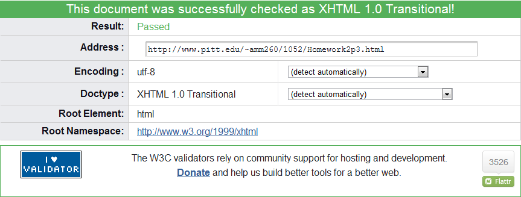

Look Ma, I Didn't Copy Knuckles! |
|
|---|---|
|
While Knuckles set the golden standard for table layouts back in the early days of the web, new HTML artists must soldier on and break new ground in this exciting and definitely still used paradigm. |
Places People Know Kunckles:
|
Knuckles was a true web hero!This site has the approved written consent of Fox Sports, Kunckles, and Major League Baseball. |
|
